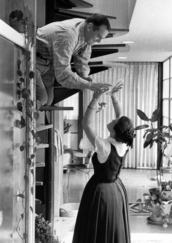

Charles and Ray Eames
“The role of the designer is that of a very good, thoughtful host anticipating the needs of his guests.”
— Charles Eames
Design Philosophy

Charles Eames was invited in 1971 to give the Charles Eliot Norton Lectures at Harvard University. He chose for his subject an unusual, but wholly natural object: The banana leaf. At the time, the banana leaf was the most common object to eat food off of in southern India, a natural dish. He noted that most designers would take such a phenomenon and make it different, make it ornate and complicated, or lacquered over with flash and “personal” artistic statements. But not the Office of Charles and Ray Eames. For them, design was more than that—in fact, it was the opposite of that.
“You can go beyond that and the guys that have not only means, but a certain amount of knowledge and understanding, go the next step and they eat off of a banana leaf. I’m not prepared to say that the banana leaf that one eats off of is the same as the other eats off of, but it’s that process that has happened within the man that changes the banana leaf. And as we attack these problems—and I hope and I expect that the total amount of energy used in this world is going to go from high to medium to a little bit lower—the banana leaf idea might have a great part in it.”
Eames design, Eames furniture, is about the natural world, expressed with less than natural materials. It’s a paradox, but a lovely and simple one, one with the ring of truth and beauty. The Eames didn’t remake the banana leaf as something different, or something better; they tried to express the banana leaf as simply, as modernly, as possible. The Eames furniture sees no need to overturn nature, or flout it, but rather sees an opportunity for integration. Even with modern and pre-fabricated materials, Eames furniture is harmonious, thoughtful, and natural. It fits with the curve of the earth, and resists the jagged intrusions of the modern world.
Charles and Ray Eames believed in the extraordinary power and beauty of the every day object. Their offices became famous for the thousands of slides they kept in drawers, prepped to be shown, and the seemingly simple photographs of seemingly simple objects revealed for what they could be, not what they are. Charles Eames referred to this phenomenon, often achieved by clever and illogical juxtaposition, “a new depth of vision.” These slide shows were exhibited at school, homes, offices, and lectures, and became the rallying point for all of the Eames furniture designs. The first Eames short films were born out of these depth visions: Charles saw a splash of soapy water on a schoolyard playground, heard Bach in his head, and produced the lovely Blacktop. Ray took the molded plywood splints they’d made for the Navy during WWII, and she made sculptures out of them.
Inspiration from the natural world, and material from the modern: a synthesis of ordinary beauty and extraordinary technology. The Eames design philosophy was generous, elegant, and had more layers than an onion.